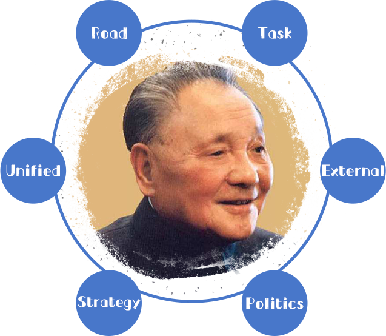
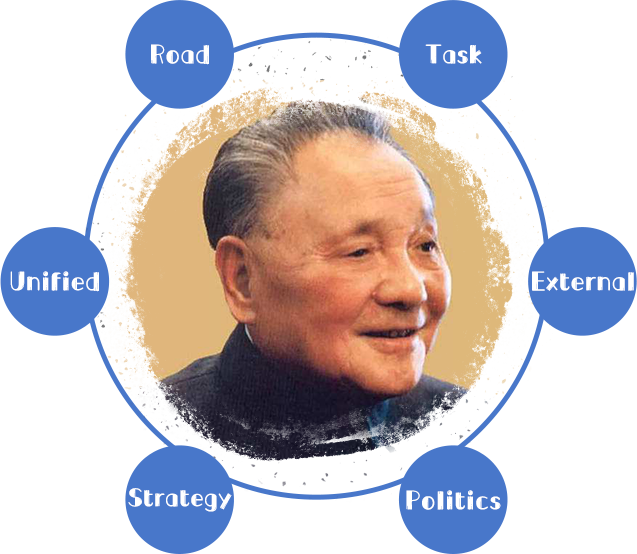

For the first time, Deng Xiaoping's theory has answered this fundamental question systematically and preliminarily on the road of China's socialist development.
A series of basic issues, such as the stage of development, the fundamental task, the motive force of development, external conditions, political guarantee, strategic steps, the leadership and reliance of the Party and the reunification of the motherland, are discussed.
Guiding our Party to formulate the basic line in the primary stage of socialism.

 Deng Xiaoping: Communist Party of China
Deng Xiaoping: Communist Party of China

He advocated the policy of "reform and opening up" and "one country, two systems", which changed China in the late 20th century and influenced the world. Therefore, in 1978 and 1985, he was twice elected "Person of the Year" by Time magazine.
 

On the Road of Socialist Development
Emphasis should be placed on following our own path, not regarding books as dogmas, not copying foreign models, taking Marxism as guidance, taking practice as the sole criterion for testing truth, emancipating the mind, seeking truth from facts, respecting the initiative spirit of the masses, and building socialism with Chinese characteristics.
On the Fundamental Task of Socialism
It points out that the essence of socialism is to liberate productive forces, develop productive forces, eliminate exploitation, eliminate polarization and ultimately achieve common prosperity. It is emphasized that the main contradiction in our society at the present stage is the contradiction between the increasing material and cultural needs of the people and the backward social production. We must put the development of productive forces in the first place, take economic construction as the center, and promote social progress in an all-round way.
On the External Conditions of Socialist Construction
It is pointed out that peace and development are the two major themes of the contemporary world. We must adhere to an independent foreign policy of peace and strive for a favorable international environment for China's modernization drive. It is emphasized that opening to the outside world is indispensable for reform and construction, and that closure can only lead to backwardness.
On the Political Guarantee of Socialist Construction
It emphasizes adhering to the socialist road, the people's democratic dictatorship, the leadership of the Communist Party of China and Mao Zedong Thought of Marxism. These four basic principles are the foundation of a nation, the guarantee of the healthy development of reform, opening up and modernization, and the new era content of reform, opening up and modernization.
On the reunification of the motherland
The creative conception of "one country, two systems" is put forward. Under the premise of one China, the main body of the country adheres to the socialist system, while Hong Kong, Macao and Taiwan maintain the original capitalist system unchanged for a long time, so as to promote the accomplishment of the great cause of peaceful reunification of the motherland in accordance with this principle.
On the Strategic Steps of Socialist Construction
It is proposed that modernization should be basically realized in three steps. In the long process of modernization construction, we should seize the opportunity to strive for a number of stages of rapid development and better benefits, and to reach a higher level every few years. Poverty is not socialism, and it is impossible to get rich at the same time. We must allow and encourage some people in some areas to get rich first, so as to drive more and more regions and people to achieve common prosperity gradually.